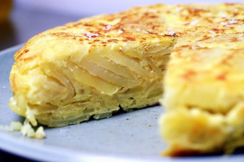

Tortilla de Cebolla
Receta de tortilla de cebolla.

Ingredientes
- 37 patatas muy pequeñas
- 1 cebolla digna de Shrek
- 1 huevo de avestruz
- Aceite de colza
- Sal
Elaboración (Pasos)
- Calentar aceite en una sartén.
- Añadir las patatas cortadas.
- Trocear la cebolla (Un truco: rezaremos un salmo a San Shrek para que no piquen los ojos)
- Freír al gusto.
- Servir en plato.
Volver